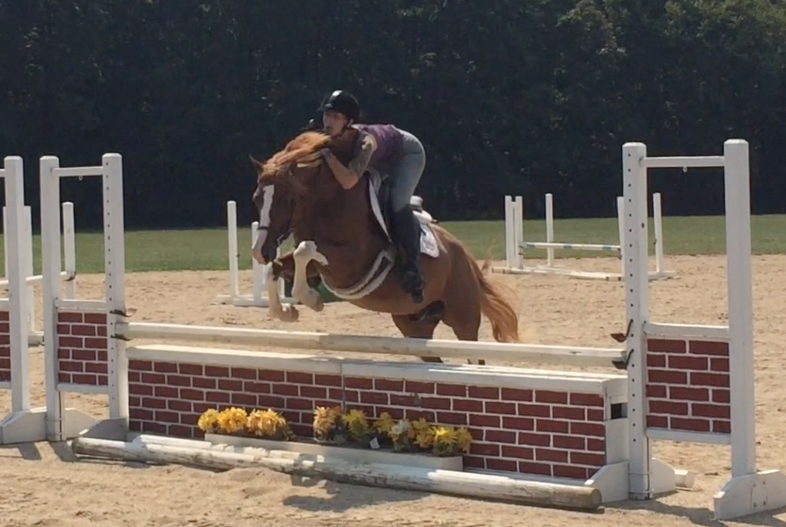
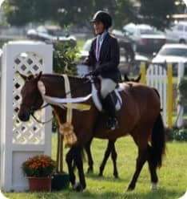

Catch Rides & Shipping
Right kid. Right pony. Right trailer.
Rider available, rider needed, shipping routes, trainers, braiders, grooms, photographers, and the useful barn people who make show life work.

Post Board
Filter by what you need.
Photo, title, location, tags, and one useful note. Click a card to get the full path behind a Barn Pass.

Lexington area. Trainer references. Sale video help and local show miles.

Virginia. Current video. Trainer on site. Parent permission required.
Shared route, one pony spot, trunk room, and layover notes available.

Quiet pony, flexible timing, looking for references and gentle handling.

Rates, photos, early-morning availability, and payment notes.

Flat, fences, conformation clips, and tidy short edits for listings.
Showing all helper board posts.
Catch Rides
Put the details where everybody can compare them.
Division, height, dates, location, trainer permission, video, rate, and what kind of ride the pony actually needs.
Rider Available
Good hands looking for useful rounds.
Short, specific posts make good matches faster.
Rider Needed
Say the job clearly.
Not every catch ride is the same. Is this a quiet confidence round, a handy trip, a sale video, or a pony who needs tact?
Shipping Routes
Are you already going that way?
Trailer seats, shared routes, layovers, references, timing, and pony comfort notes.
Mid-May. References available. Gentle shipper preferred.
Looking for shared route, trunk space, and calm handling.
Dates, stops, references, layover notes, and phone path.
Need Shipping
Post the route before the text chain gets ridiculous.
Where from, where to, date window, pony size, trunk needs, layover preferences, and handling notes.
Services
The people who keep show day moving.
Trainers, braiders, grooms, bodyworkers, photographers, videographers, and the barn services everyone asks for too late.